Mirar más allá de lo evidente.
Hallar inspiración en el detalle.
El asombro no se busca: se aprende.The Art of Wonder
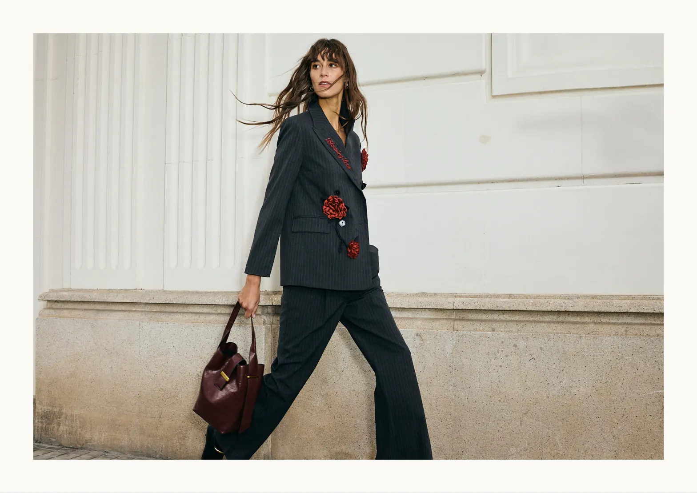

El asombro no está en lo que vemos.
Está en cómo decidimos mirarlo.
Mirar dos veces ya es crear.


Un gesto, una pausa.
Lo pequeño guarda lo grande.
Basta con detenerse.
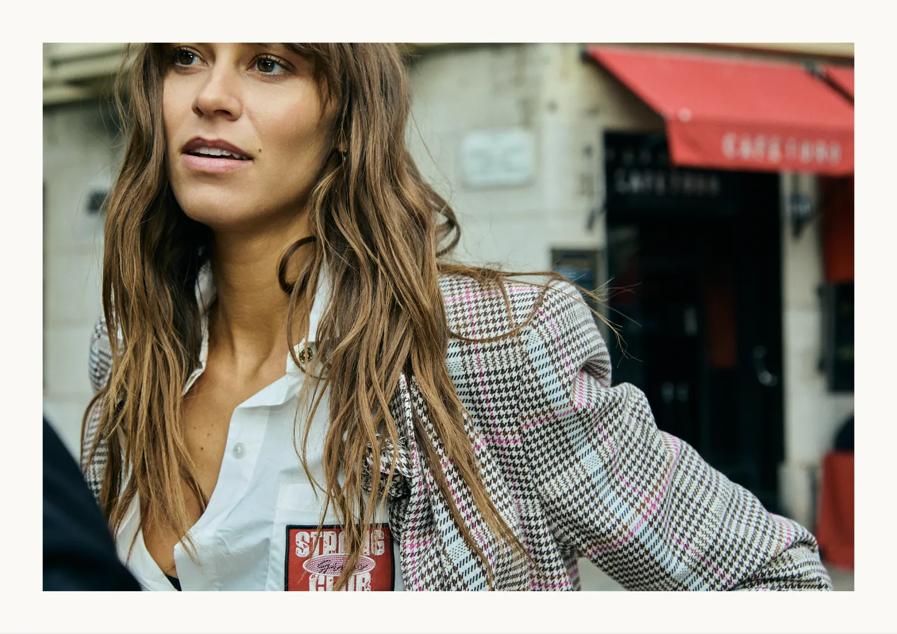
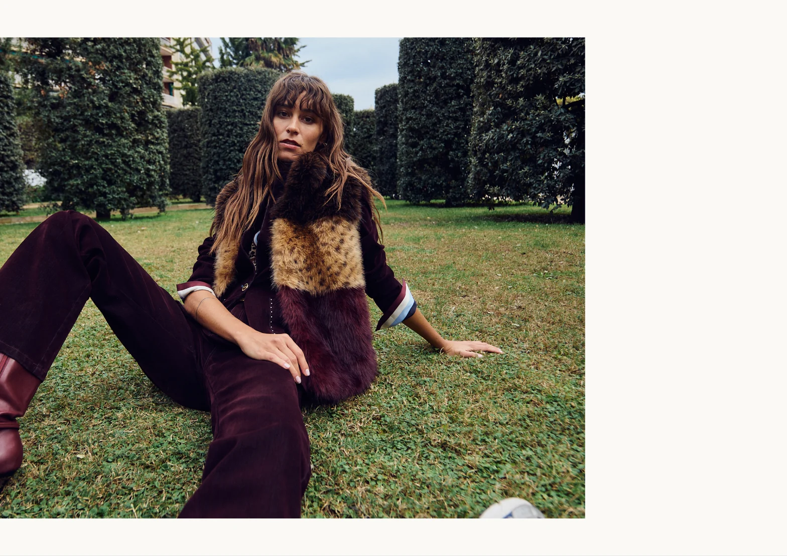
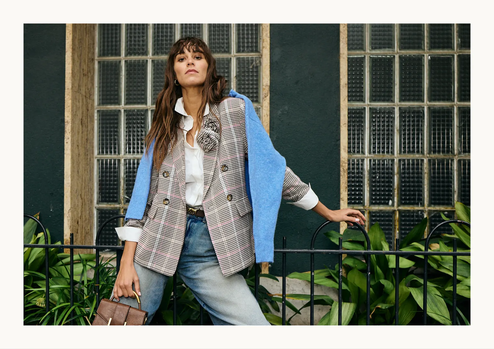

Lo heredado aprende a jugar.
Las reglas, para saber romperlas.
La imaginación no pide permiso.

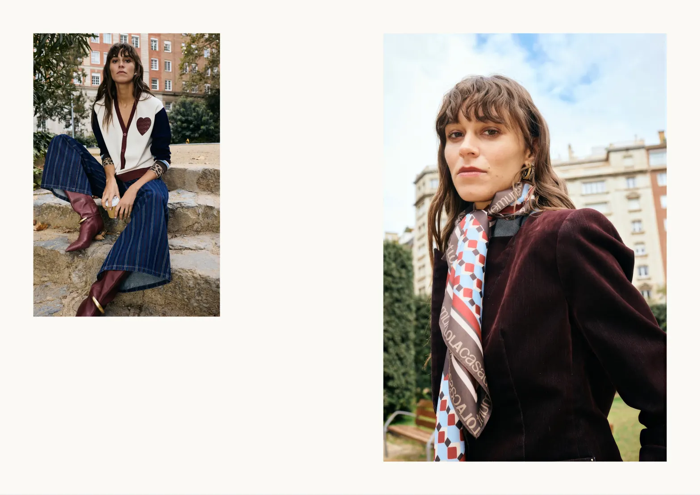


Ser una y ser muchas.
Cambiar de ritmo, no de voz.
Todas a la vez, siempre una.


Una casa sin paredes.
Cada cuarto, un sueño distinto.
Vestirse es soñar despierta.Maison des Rêves
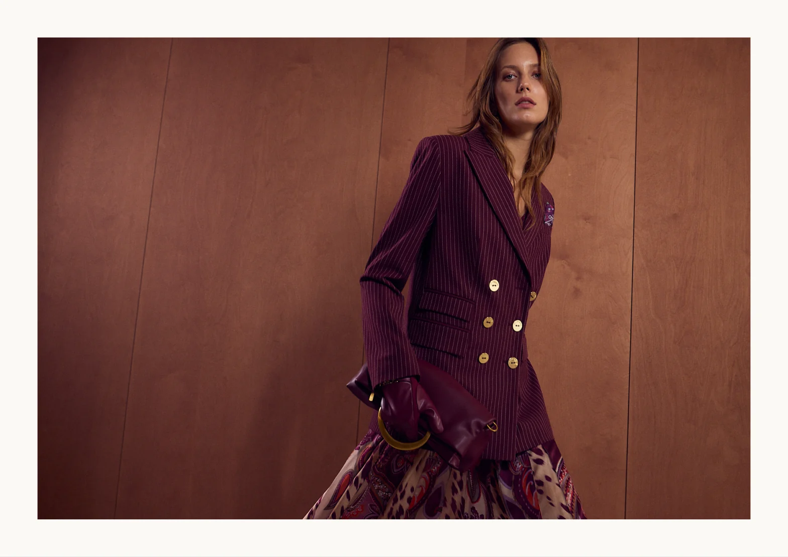
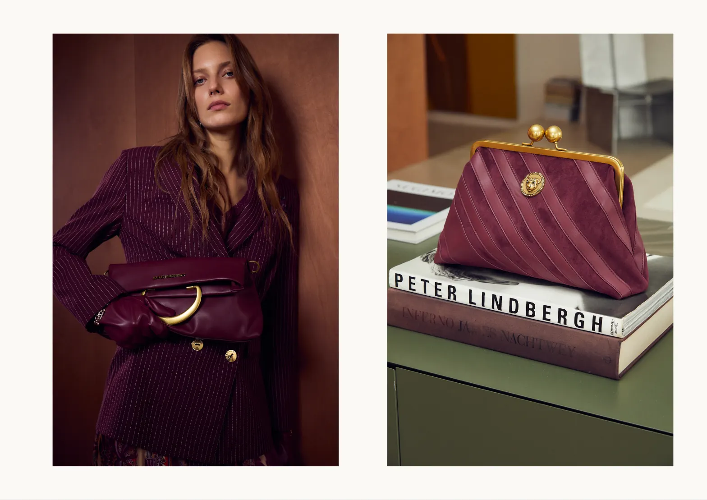
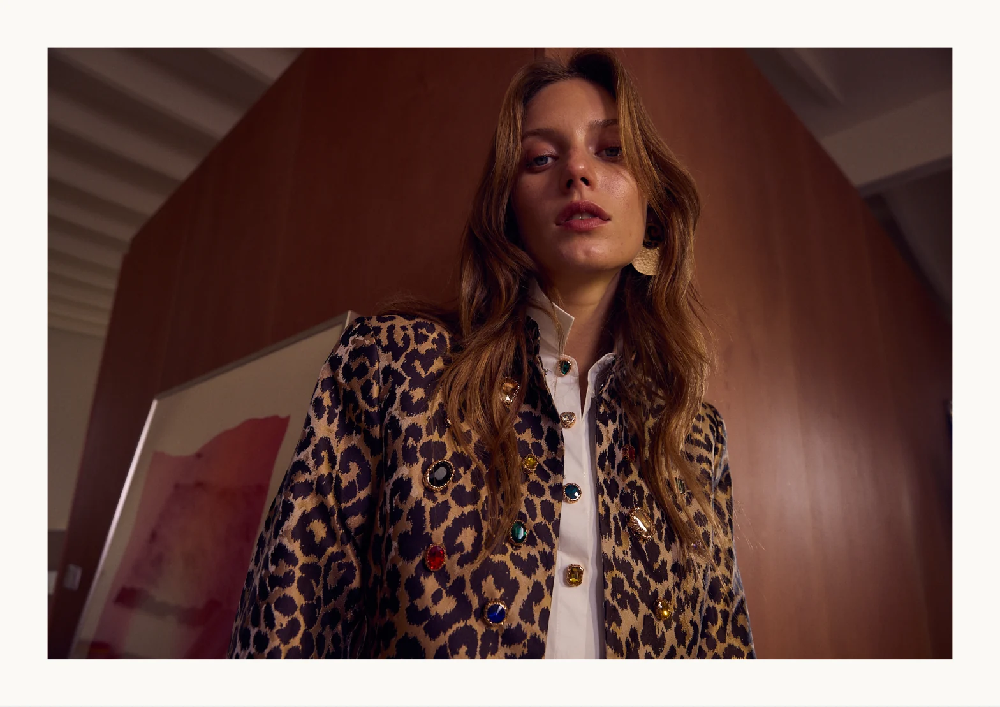
Afuera, el mundo se detiene.
Dentro, el tiempo es nuestro.
Cerrar los ojos y quedarse.

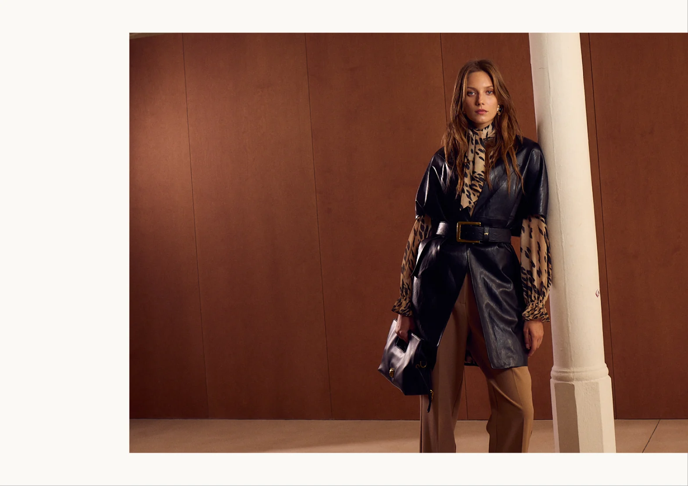
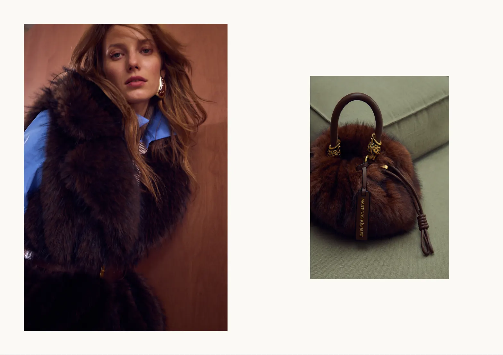

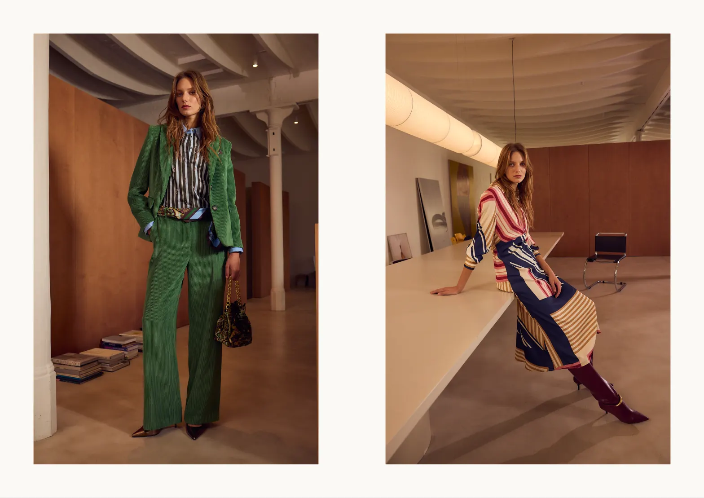
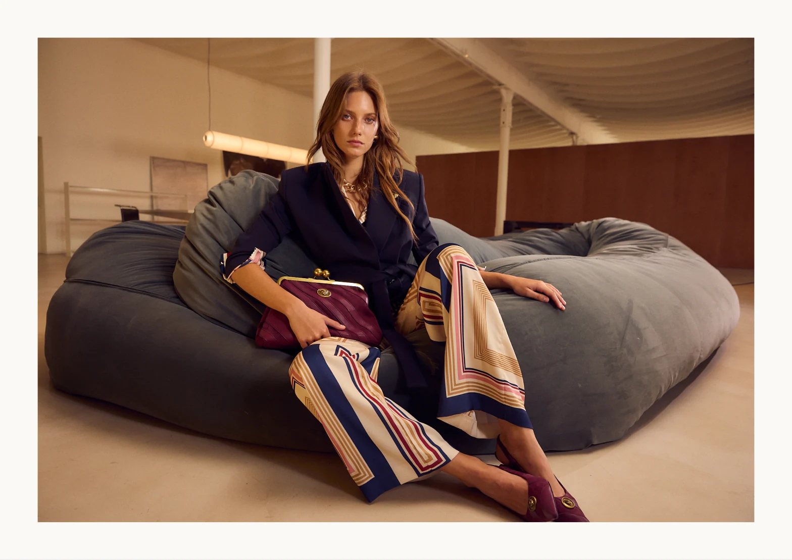
Abrir las ventanas al sueño.
Que la noche dure un poco más.
Despertar sin dejar de soñar.